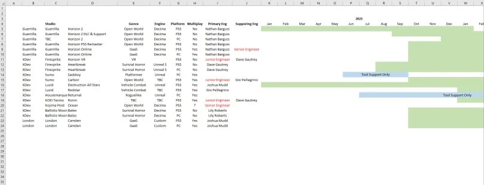

Horizon Forbiden West está a caminho do PC, revela documento vasado da Sony
Lançado em fevereiro deste ano para PlayStation 4 e PlayStation 5, Horizon Forbidden West deve seguir o caminho de seu antecessor e já está sendo preparado para chegar ao PC. Um suposto documento vazado da Sony confirma isso e também revela que a Guerrilla Games também está preparando a chegada de um futuro DLC de história para o game.
Ele também traz algumas informações interessantes, como a confirmação de que a Kojima Productions já está desenvolvendo um novo projeto conhecido pelo nome Ocean — que pode ser Death Stranding 2. Para completar, ele traz diversas informações que já foram confirmadas, como a versão PC de Sackboy: A Big Adventure, anunciada oficialmente na semana passada.
Além disso, o documento volta a trazer a informação de que Horizon Zero Dawn vai ganhar uma remasterização para o PlayStation 5. Segundo rumores, o título teria como objetivo atualizar a apresentação visual do game, o deixando com a mesma qualidade vista em sua sequência. Além disso, a nova versão também teria como foco a adição de diversos recursos de acessibilidade.
Documento confirma outros lançamentos para PC e PS5
Outras informações contidas no vazamento incluem a confirmação de que o mundo de Horizon deve ganhar uma nova experiência multiplayer online. Os planos da Sony seriam disponibilizá-la de forma simultânea no PC e no PlayStation 5, e o título deve fazer partes das iniciativas da empresa de oferecer ao público uma quantidade generosa de games como serviço em um futuro próximo.
A lista também menciona títulos como Rise of the Ronin, projeto do Team Ninja que está sendo criado em parceria com os estúdios do PlayStation, o jogo de corrida Destruction All-Stars e a versão PC de Returnal — outra que também já foi alvo de vários vazamentos anteriores. Também há menções a Carbon, um novo jogo de mundo aberto da Sumo Interactive, e de Heartbreak, um survival horror em desenvolvimento pela Firesprite.
Assim como acontece com outros documentos cuja origem não foi confirmada, é preciso interpretar as informações divulgadas com cuidado e não confiar 100% nelas. No entanto, o fato de que Horizon Forbidden West para PC já havia aparecido no famoso vazamento da NVIDIA ajuda a reforçar que seu anúncio oficial pode ser mera questão de tempo.
Via: DSOGaming
CONTEÚDO RELACIONADO